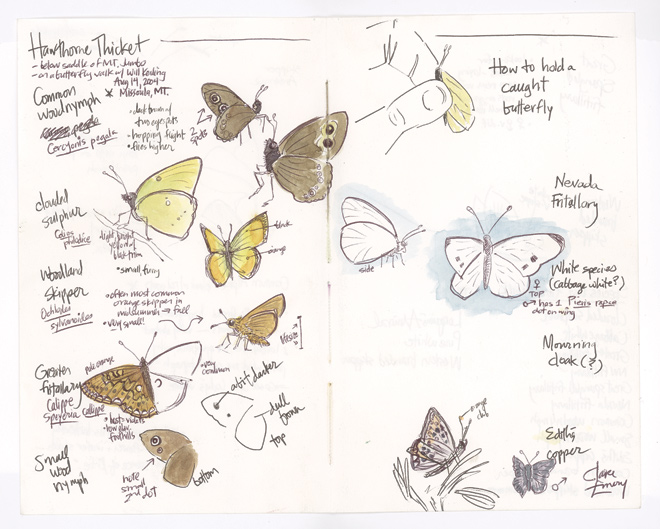
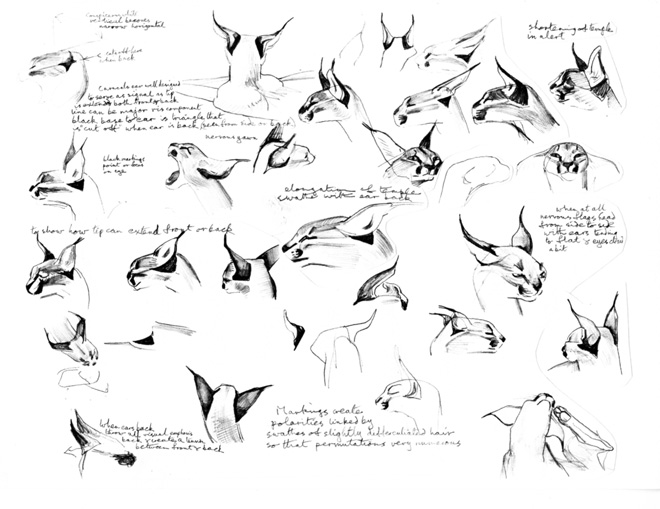
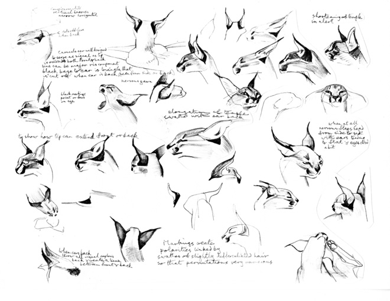

Syllabus: Fractal-U Course on LLMs
Overview and motivations for the Fractal-U LLM Course.
Intro
In this course, we will create our own AI Assistant. The assistant will be created by augmenting and fine-tuning an open-source Large Language Model (LLM).
So what exactly is an AI Assistant, and why would we want to make one?
There is a lot of hype around AI Assistants at the moment. Folks are imagining a future where we all have powerful, personalized helpers at our fingertips. These Assistants promise to make our lives easier and more comfortable. They will be the AIs of Science Fiction made manifest: TARS from Interstellar, HAL 9000 from Space Odyssey, Iron Man’s Jarvis, etc.
Realistic Assistants
Despite the breakneck speed of LLM progress, AI Assistants as powerful as those are still a ways off. The exact timelines are hard, if not impossible, to predict. For now it is safe to say that Assistants of that caliber won’t be here anytime “soon”. But, barring some force majeure, they will exist at some point.
The gap, then, is between the advanced Assistants folks are promising and dreaming about, and the LLM hallucinations and steep compute requirements we are still dealing with one the ground.
Building an AI Assistant
Where does that leave us? Well, as a recent announcement from OpenAI shows, fine-tuning a GPT-3.5 model on small, clean datasets can even surpass GPT-4 on certain tasks.
That’s what we are aiming for. In other words, we already have the ability to develop outrageously powerful tools by fine-tuning LLMs on small, clean datasets.
So while we won’t make Iron Man’s Jarvis, we are aiming for far more than a simple chatbot. Think of our Assistant like a smart Rubber Duck. For reference, a Rubber Duck is anything that you keep around your desk and talk to about your work. It is a physical tool for thought, since it’s so often helpful to speak out loud the swirl of thoughts inside our heads.
Our simple Assistant will be a Rubber Duck that we can talk to, and that talks back. When we ask it a question about our work, it will respond given what it knows about the project as a whole. Or, if we are simply verbalizing a thought to untangle it, the Assistant can give us feedback or suggest other ideas.
If we can be so bold: our Assistant will be a mini-Jarvis laser-focused on a specific task. Then, as both the tools and field progresses, we will have a full development stack ready to unlock even more capabilities from this smart Rubber Duck.
Course Summary: We will fine-tune and augment an LLM on a small, clean dataset to build an Intelligent Rubber Duck.
Course Overview
Each lesson lives inside a Jupyter Notebook. The notebooks build on each other, but they are also self-contained and reviewable on their own.
Here is an outline of the lessons:
1. Python environments for LLMs
Using mamba and pip to create isolated, reproducible python environments.
2. Blogging with nbdev
Setting up a blog with nbdev and github pages.
3. Running HuggingFace NLP models
Using the HuggingFace API to run NLP models.
4. Running optimized LLMs with llama.cpp
Running quantized, optimized LLMs.
5. Processing text documents for LLMs
Preparing text data for fine-tuning and Retrieval Augmented Generation (RAG)
6. Fine-tuning LLMs on a GPU
Scripts to efficiently fine-tune LLMs
7. Running fine-tuned LLMs locally on your phone
Deploying fine-tuned, quantized LLMs on mobile devices
This is a public-facing course. Students should write about their journey to both cement and track their progress.
Publishing is a powerful tool for learning since it casts a piece of work under a new, critical light. Your understanding of a topic is also crystallized by seeing other’s work, highlighted from different angles.
Blogging out in the open can be scary, but here we aim to make it as easy and helpful as possible.
Course Philosophy
Jupyter Notebooks are the modern, programming version of field journals. The inspirational samples from this Wired article below show what science, at its best and most alive, can be:
  

Let’s focus on the last example: the field notes about a lynx. Notice that we’re not reading a long description of what a Lynx is supposed to look like. And we’re not looking at a series of diagrams without context either. We’re getting the best of both worlds: short and relevant descriptions right next to clear, working examples. Field notes bridge the gap between the written, theoretical and the actual, practical.
Notebooks can do for code what the field notes above did for the lynx. We can interactively show people the data, describe what’s being done, and make sure that the results are correct. We can even show any mistakes and struggles along the way.
This tight loop between what you’re doing (code), describing what you’re doing (documentation), and making sure it’s correct (tests) is a great way to approach research. More than that, it is an incredibly powerful way to communicate and share ideas.
Each lesson is like an interactive field journal. You should feel as if someone is walking you through an experiment, going step by step and talking through the process along the way. And you should feel like an active participant in the research: you can always modify a cell or insert new ones to try out your own ideas.
Conclusion
This notebook introduced our goals and approach for the Fractal-U LLMs course. In summary, we will fine-tune and augment an open-source LLM to create a simple AI Assistant that can help us better learn and create.
Thank you for coming along on this journey! I promise that we will learn a ton, and have lots of fun along the way.